966万回
966万回
『数十匹の犬たちは、女の子で寝ていたらどうするのか？』を検証→制御不能すぎる『とんでもない光景』が966万再生「羨ましい」「息吸えないｗ」
Excite エキサイト · 03 Nov
966万回
Excite エキサイト · 03 Nov
 290万回
NEW
290万回
NEW
Infoseek · 03 Nov
 200万回
200万回
ニコニコニュース · 03 Nov · @by.nico.log ♥29,033
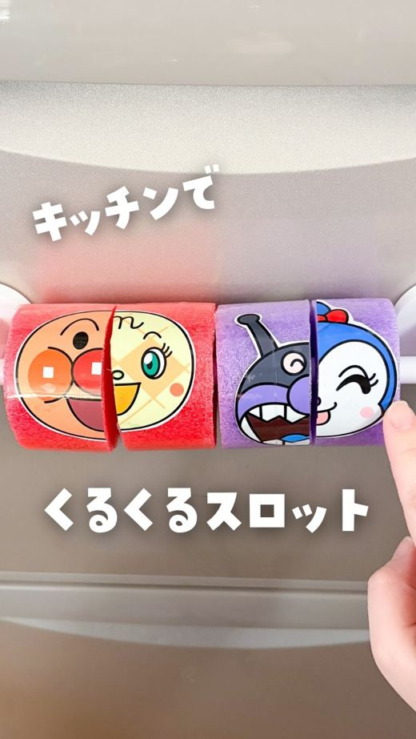
172万回 NEWねとらぼ · 04 Nov · @mi_chan.asobi ♥12,239
Excite エキサイト · 04 Nov
 100万回
NEW
100万回
NEW
Excite エキサイト · 04 Nov
Excite エキサイト · 03 Nov
 66万回
NEW
66万回
NEW
ねとらぼ · 04 Nov · @chimaki.cafe ♥9,076
Excite エキサイト · 04 Nov
 52万回
NEW
52万回
NEW
千葉日報オンライン · 04 Nov · @fujikawaguchiko ♥5,691
千葉テレビ放送 · 04 Nov
ライブドアニュース · 04 Nov
ニコニコニュース · 04 Nov
au Webポータル · 03 Nov
Unisba Media · 04 Nov
Excite エキサイト · 04 Nov
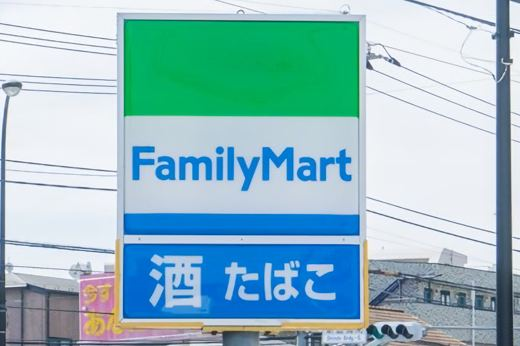
NEWBuzzFeed · 04 Nov
朝日新聞 · 04 Nov
Yahoo!ニュース · 04 Nov
BuzzFeed · 04 Nov
TRILL · 04 Nov
스타뉴스 · 04 Nov
https://thainow.jp/ · 04 Nov · @janus.vvv ♥3,681
ニコニコニュース · 04 Nov
ニコニコニュース · 04 Nov
めざましmedia · 04 Nov
中日新聞Web · 04 Nov · @non_kamo_ne ♥23,697
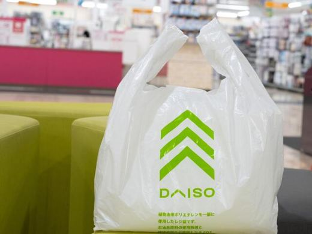
NEWｄメニューニュース · 04 Nov
BuzzFeed · 04 Nov
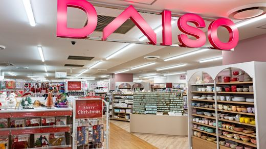
NEWAll About ニュース · 04 Nov
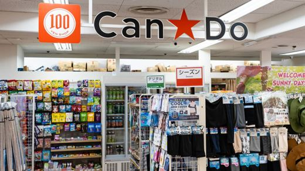
NEWAll About ニュース · 04 Nov
All About ニュース · 04 Nov
ｄメニューニュース · 04 Nov
株式会社はしづめ製麺のプレスリリース 練り込み麺のパイオニア、1949年創業のはしづめ製麺が、ゆず・山椒・ごぼうなどを練り込んだ
株式会社LADUREE JAPONのプレスリリース 新丸ビル店限定の新作ドリンクや、テイクアウトスタイルの新作フード、ラデュレ初
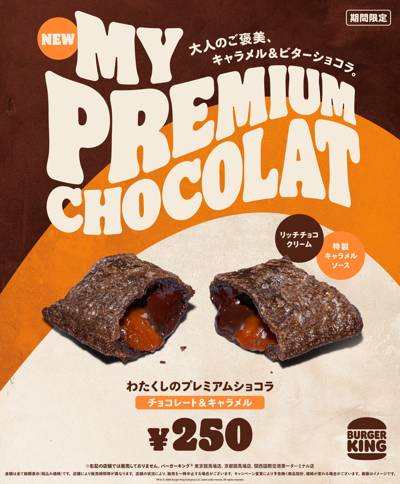
11/04 13:00 🗼 東京株式会社ビーケー・ジャパンのプレスリリース 11月6日（金）より期間限定で新発売 株式会社ビーケー・ジャパン（本社：東京都千代
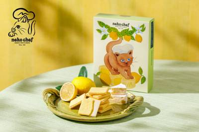
11/04 12:10 🗼 東京株式会社シュクレイのプレスリリース より満足感のあるチーズの味わいを求めて、チョコ※の配合を見直しました。 株式会社シュクレイ（
ベネリック株式会社のプレスリリース ※画像はイメージです 株式会社ハル研究所と任天堂株式会社が開発し、任天堂株式会社が発売する人
株式会社WDI JAPANのプレスリリース 伝統の隈取、ロックをまとう。2026年11月6日（金）販売開始 様々な音楽を聴きなが
森永製菓株式会社のプレスリリース 森永製菓株式会社（東京都港区芝浦、代表取締役社長 COO・森 信也）は、「ｉｎゼリー」ブラン
株式会社WDI JAPANのプレスリリース 東京を象徴するランドマーク「TOKYO TOWER」とのコラボレーションを実施 販売
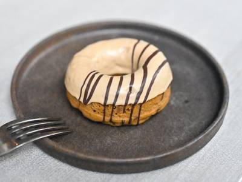
11/04 11:00 🗼 東京株式会社ウィッチクラフトのプレスリリース 永田町店限定で2026年11月5日発売 ほうじ茶の香ばしさとグレープフルーツピールのほ
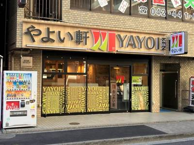
11/04 11:00 🗼 東京株式会社プレナスのプレスリリース 11.5(木)10時～ 株式会社プレナスは、定食レストラン「やよい軒」を、2026年10月末
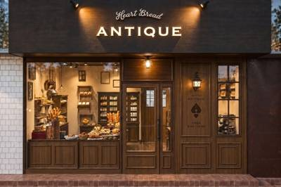
11/04 10:20 🗼 千葉株式会社オールハーツ・カンパニーのプレスリリース ～2026年11月20日（金）よりグランドオープン～ 全国にベーカリー＆パティ
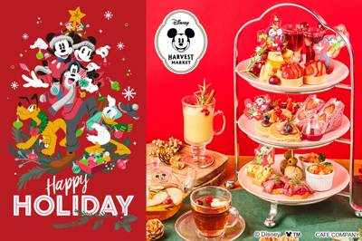
11/04 10:10 🗼 東京カフェ・カンパニー株式会社のプレスリリース 季節を感じる「日本中の〝おいしさ″」を、ディズニーの世界観を通じて〝楽しく″〝ヘルシ
株式会社ロッテのプレスリリース 株式会社ロッテ（東京都新宿区、代表取締役社長執行役員：中島英樹、以下ロッテ）は、2026年11月
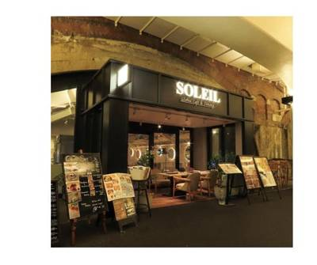
11/04 10:00 🗼 都内株式会社ぐるなびのプレスリリース 株式会社ぐるなび（本社：東京都千代田区、代表取締役社長：杉原章郎）は、株式会社ニコリオ（本社：
三井農林株式会社のプレスリリース ～商品購入で直筆サイン入りチェキやオリジナルグッズなどが当たるキャンペーンも～ 日東紅茶ブラン
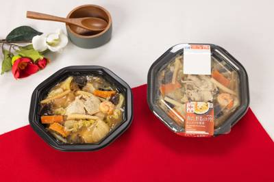
11/04 18:30 🌐 全国株式会社セブン‐イレブン・ジャパンのプレスリリース 〜濃厚な餡と野菜のおいしさ引き立つこだわりの中華丼～ 株式会社セブン‐イレ
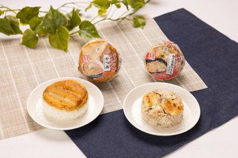
11/04 18:00 ❓ 不明株式会社セブン‐イレブン・ジャパンのプレスリリース 〜秋の行楽や忙しい日常の「満足感」に貢献！～ 株式会社セブン‐イレブン・ジ
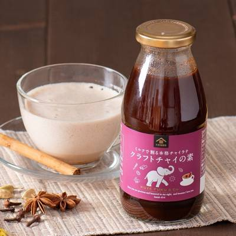
11/04 18:00 ❓ 不明株式会社サンクゼールのプレスリリース 人気のチャイラテだけでなくホットワインにも。6種のスパイスが香る冬限定の特別なドリンクベー
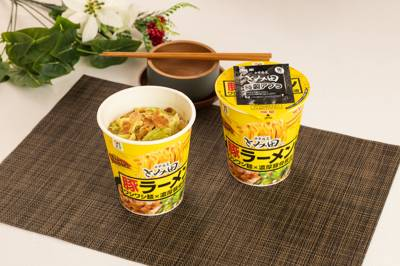
11/04 17:30 🌐 全国株式会社セブン‐イレブン・ジャパンのプレスリリース ～「セブンプレミアム ゴールド 中華蕎麦とみ田濃厚豚骨魚介中華そば」もリニュ
グロービート・ジャパン株式会社のプレスリリース 東京を代表する超人気味噌ラーメン店「花道系」の原点。その味が、花月嵐に！ 「ラー
サントリーホールディングス株式会社のプレスリリース ― 定番４種もリニューアル新発売 ― サントリー（株）は、「－１９６(イチキ
株式会社 植田園のプレスリリース 焼き林檎、キャラメルブリュレ、アップルパイをイメージした、冬に楽しみたい3つの林檎フレーバー。
パティスリー洛甘舎のプレスリリース 京都のパティスリー洛甘舎は、2026年のクリスマスケーキ、只今、店頭にて好評 予約受付中！大
サントリーホールディングス株式会社のプレスリリース ― 「大隅OSUMI」初のプレミアム焼酎が誕生 ― ― 定番品は初の刷新 ―
株式会社Circliaのプレスリリース 発売から1週間で、個人・法人あわせて200セットを超える反響。平日の5枚と週末の「ごほう
Ｇ－ＦＡＣＴＯＲＹ株式会社のプレスリリース 新作「うなから丼」は11月6日から。1,200円の並盛から総重量1kg超の「悪魔盛」
株式会社Mizkan Holdingsのプレスリリース ～横澤夏子さん、高橋文哉さん、花江夏樹さん、稲田俊輔さんがリアルな声で、
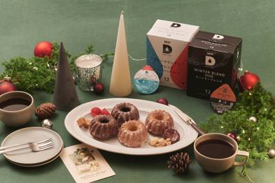
11/04 14:00 ❓ 不明UCC上島珈琲株式会社のプレスリリース ホリデーに味わう、フランス伝統菓子・クグロフケーキと「ウィンターブレンド2026」＆「ブ
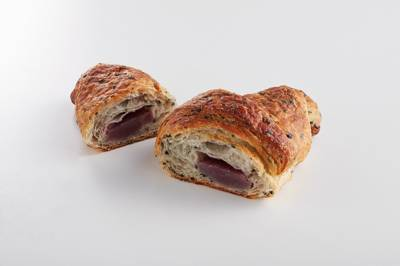
11/04 14:00 ❓ 不明有限会社a.crescentのプレスリリース クロワッサン専門店『三日月屋』は、冬季限定『紫いもクロワッサン』を発売中 今回登場
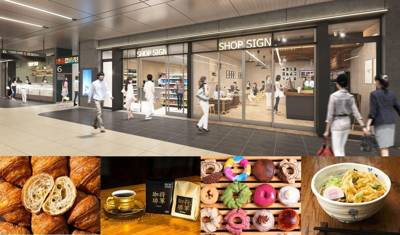
11/04 14:00 🚄 茨城株式会社JR東日本クロスステーションのプレスリリース 「サザコーヒー」「メルシーライフオーガニクス」など、暮らしが"ち
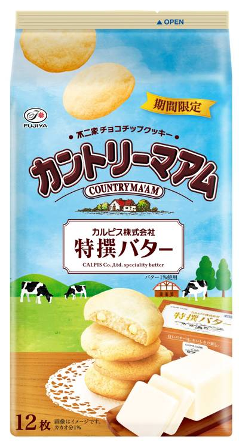
11/04 14:00 🌐 全国株式会社不二家のプレスリリース 2026年11月10日（火）全国発売 ■「カルピス（株）特撰バター」のクリーミーな味わいが愉しめ
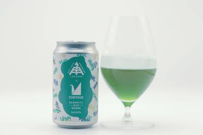
11/04 14:00 ❓ 不明有限会社二軒茶屋餅角屋本店のプレスリリース 微細藻類を育てる企業と、野生酵母を扱うブルワリーが「ちとせのセゾン ―みどり―」を1
アサヒ飲料株式会社のプレスリリース 温州みかん果汁使用、1日分のビタミンCを配合した炭酸飲料 アサヒ飲料株式会社（本社 東京、
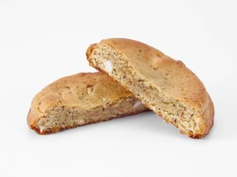
11/04 13:30 ❓ 不明株式会社セブン‐イレブン・ジャパンのプレスリリース ～お店のオーブンで仕上げに焼き上げる、香ばしくミルキーな味わいのクッキー～
ブリリアントアソシエイツ株式会社のプレスリリース ブリリアントアソシエイツのピンクではじまる、料理の新スタイル。いつもの食卓に、
株式会社ブラスのプレスリリース バタリー本店のはなれにある「Buttery Cafe（バタリーカフェ）」では、いちごのミルクレー
株式会社ロイズコンフェクトのプレスリリース 株式会社ロイズコンフェクト（北海道札幌市）は、オリジナルシール付きのチョコレートの詰
明星食品株式会社のプレスリリース “冬バテ” にはスタミナ料理！一平ちゃんから、ガツンとうまい「スタミナキムチ」味が登場 「明星
株式会社にしき食品のプレスリリース 昨年は1分で完売！今年の福袋・限定刻印の「カレー専用金のスプーン」入りセットも販売 ニシキヤ
株式会社フォーシーズのプレスリリース 2026年11月4日（水）～2027年3月2日（火）公式サイト限定 株式会社フォーシーズ
不二製油 株式会社のプレスリリース 不二製油と京都発スタートアップ七十二候が共創 希少柚子の価値を国内外へ発信 不二製油株式会
株式会社フォーシーズのプレスリリース 公式サイト限定 2026年11月4日（水）～2027年3月2日（火） 株式会社フォーシー
モエ ヘネシー ジャパン株式会社のプレスリリース ヘーゼルナッツのような香ばしい甘さと力強いスモーキーさが織りなす、日本のコミッ
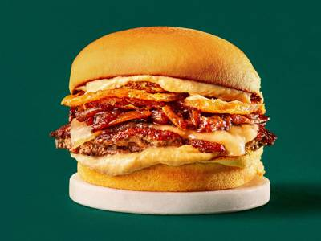
11/04 12:00 ❓ 不明アイビーカンパニー株式会社のプレスリリース ニューヨーク発のハンバーガーレストラン Shake Shack®は、期間限定メニュー
江崎グリコ株式会社のプレスリリース 江崎グリコ株式会社は、2026年11月10日（火）より「カフェオーレ＜後味すっきり＞」を全国
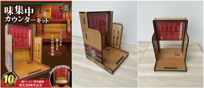
11/04 11:00 🚄 博多株式会社 一蘭のプレスリリース 株式会社 一蘭（本社：福岡市博多区 代表取締役社長：吉冨 学）は、2026年11月4日（水）より
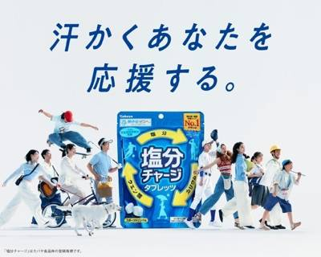
11/04 11:00 🌐 全国カバヤ食品株式会社のプレスリリース 11月11日「ととのえの日」より全国の対象サウナ施設で『塩分チャージ』のサンプリング開始。サ
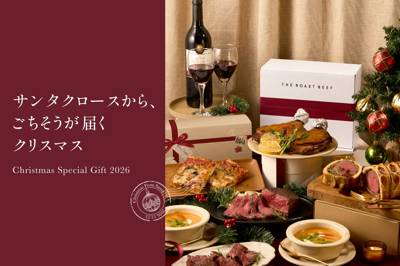
11/04 11:00 🚄 岐阜株式会社デクノバースのプレスリリース 6周年の感謝を込めて、今年も特別なクリスマスを。3種類の限定セットに加え、30食限定の赤城
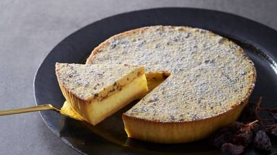
11/04 11:00 ❓ 不明モロゾフ株式会社のプレスリリース 2026年11月10日（火）～11月12日(木) 洋菓子メーカー、モロゾフ株式会社（神戸市東灘
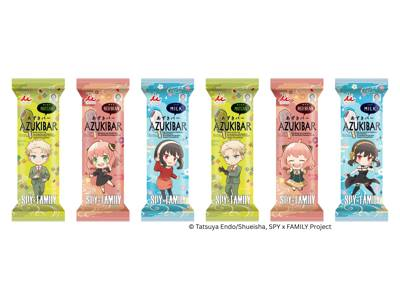
11/04 11:00 ❓ 不明井村屋グループ株式会社のプレスリリース マレーシア限定、6種類のかわいいデザイン 井村屋グループはASEAN市場のゲートウェイと
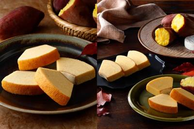
11/04 11:00 🌐 全国株式会社庫やのプレスリリース 全国のチーズガーデンおよびオンラインショップにて コロワイドグループのチーズガーデン（株式会社庫
UCC上島珈琲株式会社のプレスリリース 今年は「ゲイシャ」と「レッドブルボン」の2種採用！「コーヒー×ヘルス＆ウェルネス」の新提
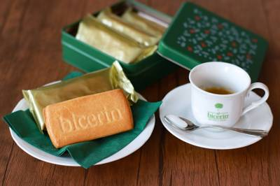
11/04 11:00 ❓ 不明ビチェリン・ファミリアーレ株式会社のプレスリリース Bicerinのブランドカラーに赤いリボンをあしらった限定デザイン。大切な人
日清食品株式会社のプレスリリース 美容アワード累計18冠*の「ヒアルモイスト」シリーズを購入して応募！「東京宝塚劇場花組公演」の
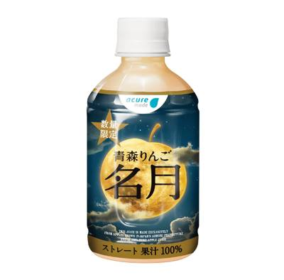
11/04 11:00 🚄 青森株式会社JR東日本クロスステーションのプレスリリース 株式会社JR東日本クロスステーション ウォータービジネスカンパニー（所在地
株式会社アンデのプレスリリース 京都のデニッシュ食パン専門店の株式会社アンデ（本社：京都市伏見区、代表取締役社長：矢澤孝樹）は、
株式会社デルタインターナショナルのプレスリリース "からだのみらい。"を支え続けて10年。オリジナルショート
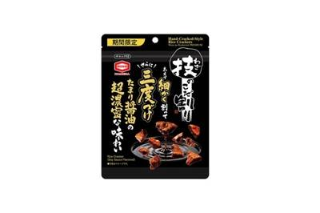
11/04 11:00 🌐 全国亀田製菓株式会社（本社：新潟県新潟市、代表取締役社長：髙木 政紀）は、『40g 技のこだ割り プレミアム』（以下：『技のこだ割り
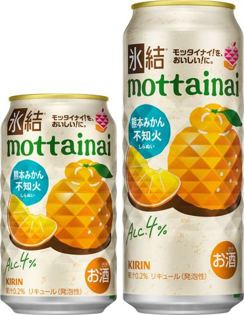
11/04 11:00 🚄 熊本キリンホールディングス株式会社のプレスリリース キリンビール株式会社（社長 堀口英樹）は、8月18日（火）に発売した「キリン
株式会社一蘭のプレスリリース 味集中カウンターキットは「呼出」ボタンを押すと店内のチャルメラ音が鳴る仕様です！ 株式会社一蘭は
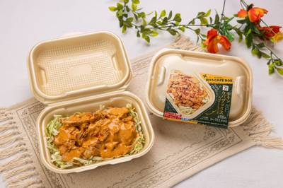
11/04 10:30 ❓ 不明株式会社セブン‐イレブン・ジャパンのプレスリリース 〜本格的でスパイシーなチキンケバブが楽しめる一品～ 株式会社セブン‐イレブ
株式会社モスフードサービスのプレスリリース ～オリジナル保冷バッグ付「モスの肉まん」やワイワイセットのおまけも登場～ モスバー
株式会社ダイヤのプレスリリース 今年創業80周年の株式会社ダイヤ（本社：大阪市生野区新今里 代表取締役社長：多田俊介 以下ダイ
株式会社ガーデンのプレスリリース ～7日間限定！家系ラーメン・油そばが、アプリ会員様限定で691円（税込760円）に～ 横浜家
株式会社MOJI Productのプレスリリース 2026年11月7日(土)発売｜1個280円・4個セット1,500円（税込）｜
ユナイテッド・スーパーマーケット・ホールディングス株式会社のプレスリリース ～毎日の食卓におすすめの商品が続々登場～ 株式会社
アイビーカンパニー株式会社のプレスリリース 11月12日（木）から順次発売 アイビーカンパニー株式会社（本社：東京都渋谷区千駄ヶ
有限会社美作農園のプレスリリース シャインマスカット食べ放題付きのアフタヌーンティーやパフェが新登場 報道関係各位 2027年1
株式会社PAPABUBBLEのプレスリリース Craft Candy Theater「PAPABUBBLE／パパブブレ」は、受
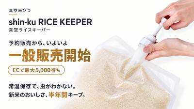
11/04 09:50 ❓ 不明株式会社インターホールディングスのプレスリリース ～最大真空率99.5%の特許技術で酸化・害虫・湿気を遮断。電気不要・繰り返し使
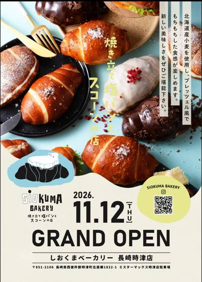
11/04 09:30 🚄 北海道R＆Iカンパニーリミテッド株式会社のプレスリリース 北海道札幌を中心に「MILK DO dore iku?」「たこ焼とえび焼なか
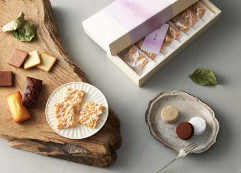
11/04 09:30 ❓ 不明株式会社 エーデルワイスのプレスリリース 新しい“にっぽんの洋菓⼦”をコンセプトに、春夏秋冬、折々の四季菓⼦をお届けしている、四
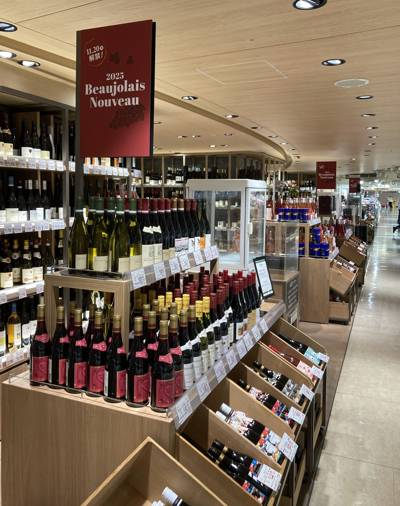
11/04 09:30 🚄 梅田株式会社阪急阪神百貨店のプレスリリース 晩秋の風物詩になっているボージョレ・ヌーヴォーの解禁が今年も迫ってまいりました。 時差の
 11/04 09:00
🚄 関西
11/04 09:00
🚄 関西
株式会社阪急阪神百貨店のプレスリリース 自家製生バターキャラメルを包んだ「フォンダンサンド」やガレット、生チョコレートを包んだシ
株式会社SAKIGAKEホールディングスのプレスリリース 11月5日（木）から12月27日（日）まで、対象の油そば2商品を並盛・
株式会社いとをかしのプレスリリース ライスにあう、ぶっ濃い一杯。昼から翌朝まで、六本木に本格家系ラーメンの新たな一軒。 王道乃印
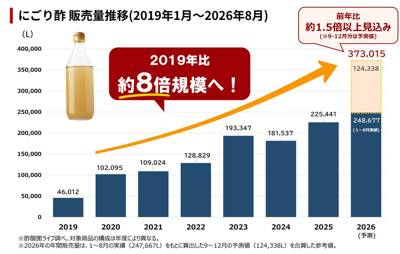
11/04 16:30 ❓ 不明酢酸菌ライフのプレスリリース ～お酢なのに「昆布だし」のようなうま味！？ かつて捨てられていた「酢酸菌」の新たな価値～ お酢づく
アイコニア・ホスピタリティ株式会社のプレスリリース フサキビーチリゾート ホテル＆ヴィラズ（所在地：沖縄県石垣市、総支配人：加
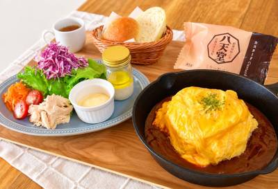
11/04 13:30 🚄 広島株式会社八天堂のプレスリリース ～八天堂自慢のカスタードクリームを“料理の味変・コーヒーのお供”に楽しむ提案も～ 「八天堂スペシ
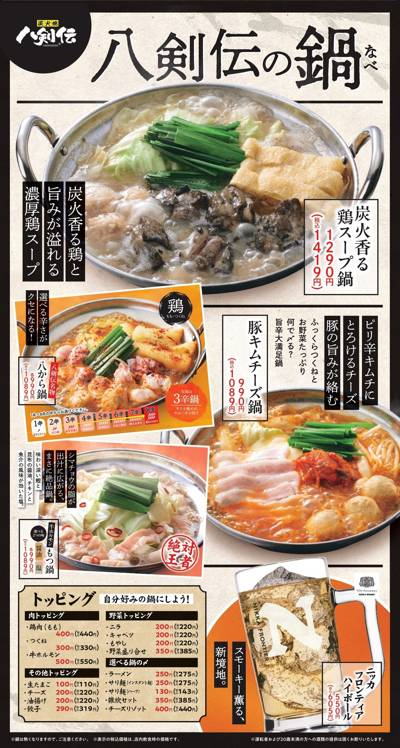
11/04 10:10 ❓ 不明株式会社テンポスホールディングスのプレスリリース 名物「八から鍋」は辛さを8段階から選べる！全4種類の鍋に豊富なトッピングや〆メ
株式会社ライテックのプレスリリース 火の持つ多様な魅力を伝えるキャラクターのバースデーを動画とプレゼントで祝おう！ ライターをは
株式会社MERRYCHRISTMASのプレスリリース 「日本で一番旨い麻辣湯」を目指して！おすすめの一杯から、自分好みに楽しめる
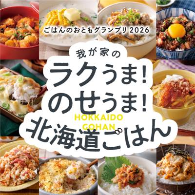
11/04 18:00 ❓ 不明北海道米販売拡大委員会(事務局：JA北海道中央会)のプレスリリース 北海道米販売拡大委員会(事務局：JA北海道中央会)は、北海道
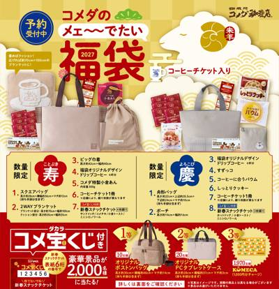
11/04 15:30 🌐 全国株式会社コメダのプレスリリース ～豪華賞品が合計2,000名様に当たるコメ宝くじ付～ 株式会社コメダ[本社：愛知県名古屋市 代表
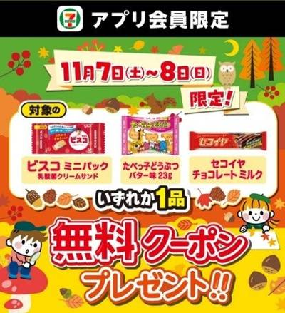
11/04 13:00 ❓ 不明株式会社セブン‐イレブン・ジャパンのプレスリリース ～3種のお菓子からいずれか1品がもらえる～ 株式会社セブン‐イレブン・ジャ
株式会社モンテローザのプレスリリース 11月5日（木）・6日（金）の2日間限定！店内でお召し上がりのメニューが全品半額でお得に楽
株式会社オニオン新聞社のプレスリリース 抽選で1名様にAmazonギフトカード30,000円分プレゼント ※写真はイメージです。
株式会社セブン‐イレブン・ジャパンのプレスリリース ～セブンプレミアムの人気商品も多数ラインアップ！～ 株式会社セブン‐イレブ
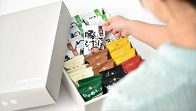
11/04 11:06 ❓ 不明株式会社コスモス食品のプレスリリース 素材本来のおいしさを届けるフリーズドライギフトが「期間限定5％オフ」。大切な方を想う優しい
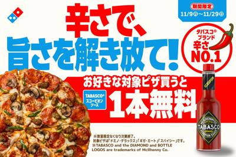
11/04 11:00 ❓ 不明株式会社ドミノ・ピザ ジャパンのプレスリリース ～辛さで、旨さを解き放て！～ 株式会社ドミノ・ピザ ジャパン（代表取締役兼CEO
株式会社アイリッジのプレスリリース 同キャンペーンにLINE販促・顧客育成ツール「LINKFUN」が 3期連続の採用！ 手軽でス
株式会社岩崎食品のプレスリリース 岩崎本舗(株式会社岩崎食品、本社：長崎県西彼杵郡、代表取締役：岩崎 礼司)は、2026年12月
SRSホールディングス株式会社のプレスリリース – 導入を記念して、「楽天ポイント」300ポイントが抽選で当たるキャ
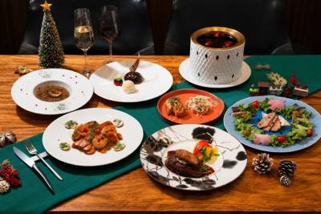
11/04 14:00 🗼 東京株式会社HESTA大倉のプレスリリース クリスマスシーズンを彩るディナーコース。15,000円・12,000円の2種類をご用意。
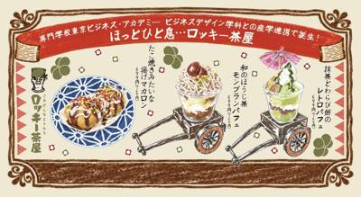
11/04 13:00 🗼 東京株式会社スパイスワークスホールディングスのプレスリリース ビジネスに、未来に、多角的な可能性を！株式会社スパイスワークスホールデ
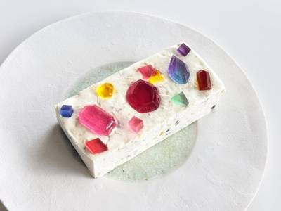
11/04 17:15 ❓ 不明メルティングポットハラペコラボ株式会社のプレスリリース ハラペコラボの定番人気アイスケーキが、フェリシモ「ごちSO！おとりよせマ
株式会社Mr.Weihnachtsmannのプレスリリース 博多駅前に限定マグカップやヨーロッパ雑貨や冬グルメ、幻想的なイルミネ
株式会社ぐるなびのプレスリリース 石川のソウルフード「とり野菜みそ」の魅力を飲食店から発信 公式サイト：https://pr.g
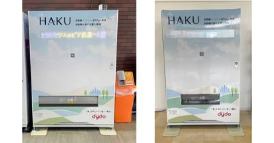
11/04 16:30 🚄 静岡ダイドードリンコ株式会社のプレスリリース ダイドードリンコ株式会社（本社：大阪市北区、代表取締役社長：中島 孝徳、以下「当社」
株式会社SU-BEEのプレスリリース イトメン「チャンポンめん」、スギヨ「香り箱 極」が定番メニューに。鍋を待つ時間も楽しめる「
株式会社グレープストーンのプレスリリース 2026年11月11日(水)～阪神梅田本店にて期間限定出店 ※画像は『Calbee＋×
株式会社味とサイエンスのプレスリリース 11月10日（火）から16日（月）まで、福岡三越 地下2階にポップアップ出店。アドベント
マリオット・インターナショナルのプレスリリース ペストリーブティックに並ぶ、フレジェやエクレアなど、旬の苺を多彩に味わう季節限定
株式会社GOKUのプレスリリース 現地メディア・食通絶賛のレセプションを経て予約が爆発。「すき焼きの常識が変わった」と話題沸騰、
ワタミ株式会社のプレスリリース 11月5日（木）より販売開始 ワタミ株式会社（本社：東京都大田区、以下ワタミ）が国内で運営する、
株式会社ミナデインのプレスリリース ミナデインが「シェフラボ」を運営するFoodNicheと業務提携。料理教室の展開と料理学校の
株式会社SFADのプレスリリース ル・サロンで味わう特別なデセールコレクションや、限定「ビュッシュ・ド・ノエル」、新年を祝う「ガ
株式会社 資生堂パーラーのプレスリリース 公式サイト：https://parlour.shiseido.co.jp/ 「資生堂パ
三菱地所ホテルズ＆リゾーツ株式会社のプレスリリース 東京の絶景とともに楽しむクリスマスダイニングを ザ ロイヤルパークホテル
株式会社アイフォレストのプレスリリース 2年間の感謝を込めて、2周年限定テリーヌや焼き菓子のプレゼントを実施。これまでのお客様に
全国商工会連合会のプレスリリース 北海道のサーロインステーキから沖縄のうるくそば、“飲む”スイートポテトまで全国各地の味を楽しめ
株式会社ベストホスピタリティーネットワークのプレスリリース 天候を気にせずスマートに集合。個室や貸切、企業宴会・懇親会からプライ
しゃぶ禅株式会社のプレスリリース しゃぶしゃぶ・すき焼き専門店『しゃぶ禅』が年末限定企画を各店で開催 しゃぶ禅株式会社（所在
株式会社movのプレスリリース いま訪日客に人気の飲食店TOP30を発表！ インバウンドビジネスメディア「訪日ラボ」及び 店舗向
株式会社HiOLIのプレスリリース ～美瑛ミルク・塩キャラメルなど定番フレーバーをHiO ICE CREAMオンラインショップ・
株式会社大庄のプレスリリース こだわりの鍋コースで忘年会を楽しもう 株式会社大庄（東京都大田区／代表取締役社長：平 了壽）は、板
ロイヤルホールディングス株式会社のプレスリリース ～浅草の歴史と美意識を現代に紡ぐ、新たなジャパニーズモダン空間が誕生～ ロイ
ワタミ株式会社のプレスリリース 早割予約は12月14日（月）まで受付中 ワタミ株式会社（本社：東京都大田区、以下ワタミ）が国内で
株式会社オカベのプレスリリース ～ご自宅用やお歳暮にも、毎年人気の冬の逸品～ 半田そうめんの製造・販売をおこなう、株式会社オカベ
株式会社モーリのプレスリリース 人気のモンブランをはじめ、ガレットオランジェや焼菓子詰合せなど、お歳暮・帰省の手土産・ご自宅用に
株式会社favyのプレスリリース JR大井町駅直結「OIMACHI TRACKS」3階、開発・運営を担う株式会社アトレの担当者3
株式会社 WithGreenのプレスリリース 「WithGreen 光が丘IMA店 外観イメージ」 11-12月販売の季節限定サ
株式会社 資生堂パーラーのプレスリリース 公式サイト：https://parlour.shiseido.co.jp/ 「資生堂パ
Ｇｉｎｇｅｒ Ｌａｂ株式会社のプレスリリース 親子支援の実践経験と広域的な食品支援の実績を持つフローレンスと協働し、子育て家庭の
株式会社 新宿高野のプレスリリース 株式会社新宿高野（代表取締役社長 髙野吉太郎 本社東京都新宿区）は、クリスマスを華やかに彩る
株式会社ホテル金沢のプレスリリース 金沢駅徒歩1分。金沢の夜景を一望する最上階バンケットで味わう、6,000円の高コスパホテル宴
株式会社榮太樓總本鋪のプレスリリース 株式会社榮太樓總本鋪(本社：東京都中央区日本橋、代表取締役社長：細田 将己、以下「榮太樓總
明海グループ株式会社のプレスリリース 2027年1月4日から1月31日までの期間限定。ふかひれや海鮮を楽しめる「祥（しょう）コー
明海グループ株式会社のプレスリリース 気仙沼産牡蠣や上海蟹味噌を使った季節限定メニューが登場 旬の冬野菜を使用した煮込み料理や汁
明海グループ株式会社のプレスリリース ふかひれスープや寿海老など新春を彩る中国料理を提供 中国料理 神戸壺中天（所在地：神戸市中
有限会社スワンのプレスリリース 麻辣湯専門店 グランドオープン 有限会社スワン（本社大阪市北区）は、麻辣湯専門店『巡る麻辣湯（メ
株式会社 石村萬盛堂のプレスリリース ふわふわ、もっちり。小さな雪だるまと過ごす、冬の楽しいひととき 株式会社石村萬盛堂（福岡県
株式会社パソナグループのプレスリリース 株式会社パソナふるさとインキュベーションが運営する、ハローキティのショーと食事が楽しめる
株式会社そごう・西武のプレスリリース 年末年始の家族の集まりや、ご自宅での楽しみにトレンドでもある『香り』を楽しめる鍋を筆頭に５
富山フューチャー開発株式会社のプレスリリース 宇治式部郷の無撰別おせんべいは、工場で個包装する前の良品や割れ等の選別工程を省いて
ポーたま株式会社のプレスリリース 沖縄の家庭で愛される、できたてのおにぎりをソウルへ 沖縄5店舗をはじめ、東京・福岡・大阪・熊本
株式会社ひぐちのプレスリリース 東武百貨店 池袋店「大長崎展」にて、「若鶏唐揚げ」と伝統柑橘「ゆうこう」を使った特製ソースを期間
ベースフード株式会社のプレスリリース 完全栄養※1の主食等を開発・販売するベースフード株式会社（本社：東京都港区、代表取締役：橋
合同会社クアッガのプレスリリース パンの通信販売、廃棄ロス削減サービスのrebakeを運営する合同会社クアッガ（本社：東京都墨田
株式会社ぐるなびのプレスリリース ・売上高は、主力のストック型サービスが牽引し二桁成長 ・飲食店ネットワーク拡大の推進人員を早期
いちご株式会社のプレスリリース 当社は、人々の豊かな暮らしを支える「サステナブルインフラ企業」です。 心を込めて現存不動産に新し
江戸後期創業、京都・宇治 伊藤久右衛門(所在地：京都府宇治市、代表取締役社長：稗哲也)は、伊藤久右衛門 茶房にて、「もみじ抹茶パ
株式会社ファーメンステーションのプレスリリース イノベーション・プラットフォーム「MISTA」に日本企業として初参画 独自の発酵
株式会社アミナコレクションのプレスリリース 約200年の古民家を受け継ぎ、未来へ残したい景色をつなぐ。金沢の歴史と文化を五感で楽
株式会社アトムのプレスリリース コロワイドグループの株式会社アトム（本社：神奈川県横浜市 代表取締役社長：植田剛史）が展開する回
ワールド・ブランズ・コレクション ホテルズ＆リゾーツ株式会社のプレスリリース あまく芳醇な香りと味わいで人々を魅了する魅惑のティ
日清オイリオグループ株式会社のプレスリリース 日清オイリオグループ株式会社（社長：久野 貴久）は国立研究開発法人新エネルギー・
みのりみのるプロジェクトのプレスリリース ＪＡ全農は、直営飲食店舗「みのるダイニング名古屋店」で、１１月７日（土）より、岐阜県産
猿田彦珈琲株式会社のプレスリリース 〜アップルティーを思わせる風味のホリデーブレンドと共に〜 猿⽥彦珈琲株式会社（本社：渋⾕区／
ＹＵＤＡミルク株式会社のプレスリリース 11月7日（土）、北上駅で出発セレモニーを開催 YUDAミルク株式会社（本社：岩手県和
Wakker Amsterdam B.V.のプレスリリース 開業1年9か月で累計売上3億円を達成！アムステルダム【Wakker
有限会社うなぎの井口のプレスリリース 参拝・撮影後の支度や移動の負担を軽く、子どもも親も笑顔に 国産うなぎの持ち帰り・地方発送専
株式会社 エーデルワイスのプレスリリース ベルギー王室御用達チョコレートブランド「ヴィタメール」から、今年もホリデーシーズンを華
TechMagic株式会社のプレスリリース 〜新型ロボットの共同開発・量産化に向けた協業を推進〜 ロボット技術で“おいしい”体験
くら寿司株式会社のプレスリリース くら寿司 ニュースレター2026年11月号 日本食チェーン、アメリカで存在感 巨大市場への進出
学校法人近畿大学のプレスリリース 令和8年（2026年）10月、農学部生が「特別栽培米 つや姫」の生育調査をしている様子 近畿大
株式会社シルバーバックス・プリンシパルのプレスリリース ホテルニューオウミが誇る三つのレストランの料理長が、新春の食卓を彩る特別
株式会社 晃商のプレスリリース 京都資本による、街なか投資で、三条・御池エリアのさらなる賑わい創出を目指す 株式会社晃商ホールデ
株式会社晃商のプレスリリース 株式会社晃商ホールディングス（本社：京都市東山区、以下晃商HD）は、京都市中京区三条下ル大黒町54
株式会社ゼンショーホールディングスのプレスリリース 株式会社バーガー・ワン（代表取締役社長：木村 大志 本社：東京都港区）が展開
株式会社タニタのプレスリリース 11月4日(水)13:00～11月18日(水)13:00 株式会社タニタ（本社：東京都板橋区、
宇都宮市のプレスリリース 宇都宮市もったいない運動20周年を記念し，宇都宮市もったいない運動協力店である「中国料理 銀座園」（
株式会社ブロンコビリーのプレスリリース ステーキハウス ブロンコビリーを全148店舗展開する株式会社ブロンコビリー（本社：愛知県
スターリゾート株式会社のプレスリリース 〜宮古島の自然と瀬戸内の食材が織りなす、野菜を主役に据えた独自のローカルテロワール〜 「
株式会社近鉄百貨店のプレスリリース 期 間 2026年11月７日(土)・８日(日) 時 間 11:00～16:00 場 所 近鉄
株式会社和田萬のプレスリリース 100年先もごまが香る食卓を目指して 1883年創業の老舗ごまメーカー、株式会社和田萬（本社所在
坂井市役所のプレスリリース 三里浜の特産「三年子らっきょう」→「ジンジャエール」「オイル漬け」「餃子」と多彩 三里浜の特産「三年
有限会社楽天地のプレスリリース 2016年の熊本地震での炊き出し、コロナ禍の医療従事者支援を経て。飲食企業として続ける “食によ
株式会社東京玉子本舗のプレスリリース 株式会社東京⽟⼦本舗「CARAMER」(代表取締役社⻑:金野 崇、本社:東京都中央区)は2
株式会社東京玉子本舗のプレスリリース 株式会社東京玉子本舗「N.Y.C.SAND」(代表取締役社長：金野 崇、本社：東京都中央区
株式会社ゼンショーホールディングスのプレスリリース 株式会社なか卯（代表取締役社長：池松 博誠 本社：東京都港区）が展開する丼
株式会社BAKEのプレスリリース 株式会社 BAKE（本社：東京都港区、代表取締役社長 CEO：笠井 英一）が展開するバターサ
森トラスト・ホテルズ＆リゾーツ株式会社のプレスリリース ～ラクレットチーズの温菜や幸生牛のローストなど、全6品を楽しむシェアスタ
RX Japan合同会社のプレスリリース 「“日本の食品”輸出EXPO」2026年11月11日（水）から3日間開催 RX Jap
アイビーカンパニー株式会社のプレスリリース 11月26日（木）正午から、事前Web予約販売スタート アイビーカンパニー株式会社（
株式会社ジーバーのプレスリリース ～地域の暮らしに寄り添う不動産会社とともに、シニアの新たな活躍の場を創出～ 株式会社ジーバー（
株式会社吉野家ホールディングスのプレスリリース -どんぶりや湯呑などをギフト商品として展開- 株式会社吉野家（本社：東京都中央区
～限定80台のPREMIUM クリスマスショコラや 予約特典として2027年カレンダーをプレゼント～ 東京都でベーカリー・ベーカ
株式会社ブールミッシュのプレスリリース 12月15日までクリスマスケーキのご予約を承ります。当日販売のカップケーキも登場。 株式
今回のテーマは「牛乳を飲む・使う『あの瞬間』」 見た人が思わず飲みたくなる動画を大募集！ 関東生乳販売農業協同組合連合会(以下、
株式会社日本セレモニーのプレスリリース クリスマスアフタヌーンティー 「TIAD, オートグラフ コレクション」（所在地：名古屋
株式会社エブリイホーミイホールディングスのプレスリリース 地魚を中心に全国の魚を。生け簀と氷の上の“一匹丸ごとの魚”がお出迎え
マリオット・インターナショナルのプレスリリース ～沖縄の海と森。豊かな島に感謝を込めたクリスマス〜 「コートヤード」ブランド国内
パルシステム生活協同組合連合会のプレスリリース アクション数に応じた寄付第1弾完了 年明けから3月末までに2トン全量贈呈 パルシ
株式会社おもちゃ箱のプレスリリース 高品質なカカオとこだわりの砂糖など、原料を厳選。時間をかけて丁寧に練り上げたゲパのチョコレー
鶴味噌醸造株式会社のプレスリリース 「燻（IBUSHI）味噌マスタードドレッシング」が総合1位・部門最優秀賞のW受賞。単月販売数
学校法人 名城大学のプレスリリース 名城大学（名古屋市天白区、理事長：小原章裕）とアピ株式会社（本社：岐阜県岐阜市、代表取締役
株式会社内田洋行ITソリューションズのプレスリリース ～内田洋行ITソリューションズ、食品表示制度改正に関するウェビナーを開催～
株式会社お亀堂のプレスリリース もちもちの求肥餅を包む、真っ赤な羊羹。練り切りでつくる、愛らしいハリネズミ。1950年創業の和菓
アサヒビール株式会社のプレスリリース 「選べる一杯、つながる時間。」をコンセプトに、松本の魅力を表現 スマドリ株式会社（本社
ミヨシ油脂株式会社のプレスリリース ミヨシ油脂株式会社（本社：東京都墨田区、代表取締役社長兼CEO：三木逸郎）は、2026年11
ガリレイホールディングス株式会社のプレスリリース タカハシガリレイ株式会社（本社：大阪市西淀川区、代表取締役社長：鳴田 友和）は
株式会社ENJIのプレスリリース 応募総数4,236件の中から株式会社ENJIが101件に選出 地元漁業協同組合・水産会社との協
株式会社 福寿園のプレスリリース お茶の新しい楽しみ方を、若い世代とともに。 福寿園は京都精華大学の学生の皆さんと、これからの暮
株式会社おもちゃ箱のプレスリリース 10月28日（水）・11月11日（水）に順次オープン。両店の開店当日は、ブランドスタッフが店
株式会社いずもえんのプレスリリース 味と品質を活かした「出雲の恵み椎茸」シリーズ 栽培期間中農薬不使用の菌床しいたけを収穫から5
一般社団法人 日本自動車連盟のプレスリリース 五浦観光ホテル提供の「常磐もの」のあんこうを、お取り寄せでも北茨城へのお出かけでも
株式会社コロワイドダイニングのプレスリリース コロワイドグループの株式会社コロワイドダイニング（本社：神奈川県横浜市、代表取締
株式会社コロワイドダイニングのプレスリリース コロワイドグループの株式会社コロワイドダイニング（本社：神奈川県横浜市、代表取締
株式会社コロワイドダイニングのプレスリリース コロワイドグループの株式会社コロワイドダイニング（本社：神奈川県横浜市、代表取締
株式会社あみやき亭のプレスリリース 株式会社あみやき亭（本社：愛知県春日井市）は、2026年11月4日（水）に京都府初出店となる
株式会社阪急阪神百貨店のプレスリリース チーズデリにチーズケーキ、チーズパンにチーズ和菓子まで、とろーり濃厚な味わいをお楽しみく
株式会社ONDOホールディングスのプレスリリース メインには「醤油ベース」と「塩ちゃんこベース」の2つの味を楽しめる2色鍋をご用
 11/05 08:52
🗼 川崎
11/05 08:52
🗼 川崎
株式会社ケイシイシイのプレスリリース 東京発あんバタースイーツ専門店「岡田謹製 あんバタ屋」（株式会社ケイシイシイ、本社北海道
株式会社おおたき里づくり研究所のプレスリリース No.3 クロモジ＆赤シソ 2026を出品 金賞受賞のNo.4 ジンジャー＆ハイ
株式会社TOILET SEARCHのプレスリリース アプリダウンロードで参加できる無料抽選会を開催。地域イベントを通じて、外出先
株式会社bf2のプレスリリース RIZIN公式ライセンスの高たんぱく餃子を大会会場のキッチンカーで販売。くじは2パック購入ごとに
ハーゲンダッツ ジャパン株式会社のプレスリリース 街中でも冬の訪れを告げる『芳醇ラムレーズン』の気温連動企画も展開 ハーゲンダ
SOAソリューションズ有限会社のプレスリリース 妥協なき少量生産を貫く気鋭の醸造家とGastro Foods Tokyoが独占パ
ジェイ・ワークス株式会社のプレスリリース 3周年を記念した1日だけの限定スイーツ「ヌヌース アニヴェルセル」「シュー ア ラ ク
ブルーマチックジャパン株式会社のプレスリリース ～11月8日(日)より「二子玉川 蔦屋家電＋」にて先行展示、 12月4日(金)～
長崎県のプレスリリース 延宝三年（1675年）創業の老舗とデンリュウがコラボした 「デンリュウの長崎からすみパスタソース」が誕生
株式会社セブン‐イレブン・ジャパンのプレスリリース 〜チーズの魅力を引き出し、素材とくちどけにこだわったスイーツが登場〜 株式
株式会社GENDA GiGO Entertainmentのプレスリリース 第一弾として11月20日(金)、GiGOイオンモール岡
エイ・エイ・ピー・シー・ジャパン株式会社のプレスリリース 2027年1月22日（金）～24日（日）3日間限定の特別コラボレーショ
カネテツデリカフーズ株式会社のプレスリリース 創業100周年の感謝を込めて、グルメやお得な特売など、家族で楽しめる特別な1日 カ
C-United株式会社のプレスリリース コロワイドグループのC-United株式会社（本社：東京都港区、代表取締役社長：友成
 11/04 11:00
🌐 全国
11/04 11:00
🌐 全国
TTNE株式会社のプレスリリース サウナの前後や休憩中の「水分＋ミネラル補給」の大切さを全国のサウナーへ。 サウナクリエイティブ
株式会社展示会営業マーケティングのプレスリリース ～ニュースになりやすい完成品ではなく、それを成立させる“見えない技術”に注目。
株式会社フルッタフルッタのプレスリリース 株式会社フルッタフルッタ（本社：東京都千代田区 社長：長澤誠、以下「当社」）は、11月
株式会社近鉄百貨店のプレスリリース 近鉄百貨店奈良店では、11月11日(水)~17日(火)の期間、「レトロ雑貨と古物市」を初開催
株式会社富澤商店のプレスリリース ～2026年11月19日（木）、サクラマチ クマモト地下1階にオープン。製菓・製パン材料など約
クールフライヤー株式会社のプレスリリース 「Riso Ball」（写真提供：Sustainable Food Lab様）と、クー
道玄坂ホテルマネジメント株式会社のプレスリリース イタリア各地の美食を味わうクリスマスディナーや、ハチ公デザインのクリスマスケー
ダイコク電機株式会社のプレスリリース 開館30周年の今年は水上花火との豪華競演も。夕暮れ時にライトアップされた幻想的な姿へと表情
株式会社トランジットホールディングスのプレスリリース 彩り豊かな料理と自分好みに仕上げる「マイバオ」。都心を望む開放的な空間で、
株式会社アイスター商事のプレスリリース 和風・デミグラスのハンバーグ各2袋に、マルゲリータピッツァ、ディルサーモン、半熟スイート
カルチュア・コンビニエンス・クラブ株式会社のプレスリリース ―テーマは「Harvest Market」、限定パンや親子で楽しめる
APAMAN株式会社のプレスリリース 心に、ほっこり。くしゅっと、寄り添う。クリスマスピラミッドの妖精が、人と人をつなぐ東京の冬
パルシステム生活協同組合連合会のプレスリリース 体に向き合い解きほぐす心 パルシステム東京（本部：東京都新宿区、理事長：西村陽子
東急ホテルズ＆リゾーツ株式会社のプレスリリース 博多仕立て 旨辛もつ鍋 横浜ベイホテル東急（横浜市西区みなとみらい・総支配人 八
東京都北区のプレスリリース ～岩手県産食材が北区のお店で味わえる～ 11月9日（月）より、「岩手-野田村-釜石市-北区連携マル
ジェイ・ワークス株式会社のプレスリリース 京都七谷鴨や宿毛の金目鯛を堪能する聖夜の華やかなコース（16,500円～）と、2026
株式会社ディー・エヌ・エーのプレスリリース LEDイマーシブトンネルで、オーロラの中を突き進むような特別演出を初披露 株式会社デ
アニヴェルセル株式会社のプレスリリース – 2026年11月18日(水)から2027年1月14日(木)までの期間限定
Anique株式会社のプレスリリース Anique株式会社（本社：東京都千代田区、代表取締役：笠井高秀）は、TVアニメ「らんま1
株式会社阪急阪神百貨店のプレスリリース ブランドリニューアル後初の西日本出店。岩塩で旨みを引き立てた「塩バニラフィナンシェ」をは
グルメグランプリ鎌倉運営委員会のプレスリリース 昨年約3,000人が来場した食の祭典が「沖縄×鎌倉交流祭」と同時開催。食べて投票
オイシーズ株式会社のプレスリリース 次回お食事無料券の配布やオリジナルグッズが当たるくじ引き抽選会を開催！ 人気飲食店の「金子半
株式会社ベネッセコーポレーションのプレスリリース 料理の飾りつけやしまじろうたちとクリスマスを楽しめるコラボメニューで、子どもか
株式会社WDI JAPANのプレスリリース ホリデーシーズンにふさわしい、懐かしくて温かみあるお料理の数々を 提供 ： 2026
株式会社 花研のプレスリリース 東京豚骨拉麺ばんからは、日頃からご愛顧いただいている皆さまへの感謝を込めて、2026年11月・1
東京都板橋区のプレスリリース 板橋区は、11月10日から11月12日の期間で日光市の協定締結20周年を記念し、日光の魅力を身近に
株式会社Treeのプレスリリース 日本初“クリスマスをコンセプトにした”Dining&bar Treeが開業5周年を記念
チーズフェスタ実行委員会(チーズ普及協議会／日本輸入チーズ普及協会)のプレスリリース チーズ普及協議会と日本輸入チーズ普及協会は
アルケリス株式会社のプレスリリース 立ちっぱなしを楽にする！？食品工場の立ち作業を支える新しい椅子「スタビシリーズ」を展示。 ア
明海グループ株式会社のプレスリリース 12月19日～25日限定。雪だるまやトナカイのスイーツとともに、クリスマスを彩る特別なティ
エコ・クリエ株式会社のプレスリリース ～リアルナチュラルコスメ「few」が、休耕茶畑を花摘みの畑へ お茶の新たな可能性を、スキン
株式会社テンポスホールディングスのプレスリリース 新しくなった富士吉原店で、あさくまのおいしさを。リニューアルに先駆け、一日限定
株式会社ビリオネアのプレスリリース 韓国の伝統発酵調味料コチュジャンを起点に、日本・韓国・イタリアの食文化を比較。料理研究家とし
株式会社双葉社のプレスリリース 全品税込み500円！ 当日はフェア限定のオリジナルうどんも！うどん共和国・埼玉の実力を味わい尽く
株式会社クリエイト・レストランツ・ホールディングスのプレスリリース 株式会社クリエイトレストランツホールディングスグループ会社・
株式会社 大泉工場のプレスリリース 大泉工場が企業部門、_SHIP KOMBUCHAとplanet rollsがプロダクト部門を
株式会社イートアンドホールディングスのプレスリリース ～保育園・子育て支援拠点・ベーカリーカフェがひとつの敷地に～ イートアンド
ANAあきんど株式会社のプレスリリース
南あわじ市のプレスリリース 極上一本釣り「ぶえん鰹」から濃密な旨みの「枕崎茶」まで！1階特産品販売＆2階レストラン限定特別メニュ
特定非営利活動法人ディーセントワーク・ラボのプレスリリース 地元ベーカリーの専用パンを注文ごとにグリル。全国の福祉事業所のお菓子
株式会社ホライズン・ホテルズのプレスリリース 予約期間 2026年11月4日（水）～12月22日(火) 大阪ベイエリアに位置する
ヒルトン福岡シーホークのプレスリリース 【2026年11月4日】ヒルトン福岡シーホーク（福岡市中央区 総支配人フレデリック・ルク
株式会社オオサカムセンデンキのプレスリリース 塩気のある豚肉と、ほくっと甘いさつまいも。秋らしい組み合わせを海苔とごはんで楽しむ
名古屋ヒルトン株式会社のプレスリリース 『源氏物語』第三章「浮舟」的矢かき会席 ヒルトン名古屋（愛知県名古屋市、総支配人アン・カ
株式会社阪急阪神百貨店のプレスリリース 会場限定のキャラクタージェラートや本場ヨーロッパの伝統スイーツ、ドイツの老舗クリスマス雑
株式会社ベルコのプレスリリース コレステロールや卵、牛乳に関する健康情報を専門的に解説 終活相談会や人気スイーツが楽しめるベルカ
株式会社オークラ ニッコー ホテルマネジメントのプレスリリース オークラアクトシティホテル浜松（静岡県浜松市：総支配人 糸 正弘
株式会社G.Attractionのプレスリリース 全国各地から集まる美食を食べつくそう！ Gi-FACTORYは、和歌山・徳島・
株式会社G.Attractionのプレスリリース 全国各地から集まる美食を食べつくそう！ Gi-FACTORYは、和歌山・徳島・
株式会社名鉄ホテルホールディングスのプレスリリース 岐阜グランドホテル（岐阜市長良川畔 社長 二神 一）では、2027年2月20
橋本市役所のプレスリリース 和歌山県橋本市では、本年度も秋の恒例イベント「まっせ・はしもと～柿まつり2026～」を11月14日(
株式会社博多ステーションビルのプレスリリース １番人気は「唐芋レアケーキラブリー」また、ラブリーの生地を使った焼菓子「焼きラブリ
朝霧乳業株式会社のプレスリリース 人気スイーツを楽しむ毎月のイベントを計6店舗で開催／2026年11月～ 朝霧乳業株式会社（本社
株式会社 グローバルエージェンツのプレスリリース 株式会社グローバルエージェンツ（本社：東京都渋谷区、代表取締役：山﨑剛）は、全
「TOKYO周穫祭2026」PR事務局のプレスリリース 今年はあなたにぴったりの東京旅が見つかる“AI旅診断”や 23区・多摩・
滋賀県醒井養鱒場のプレスリリース 滋賀県醒井養鱒場(滋賀県米原市上丹生1570)は、2026年11月28日(土)に「ニジマス採卵
株式会社スエヒロレストランシステムのプレスリリース 株式会社スエヒロレストランシステムが運営する「しゃぶしゃぶ島津」は、2026
株式会社赤ちゃん本舗のプレスリリース 株式会社赤ちゃん本舗（本社：大阪市中央区 https://www.akachan.jp）は
株式会社キャッスルホテルのプレスリリース シェフが切り分ける薪窯焼きローストビーフなど約50品目 12月29日から1月3日までの
カルチュア・コンビニエンス・クラブ株式会社のプレスリリース 「廣島Mercato」と「お菓子博」が初の合同開催。県内外から2日間
株式会社Mintoのプレスリリース 株式会社Minto（本社：東京都港区、代表取締役：水野和勝）は、大人気キャラクター『うさぎゅ
株式会社オーレックのプレスリリース 22店舗が集結！植物園で草刈機の試乗も。「五感で楽しむ！みどりのサステナマルシェ」11月21
ヤマサ蒲鉾株式会社のプレスリリース 姫路おでんと夢そばのフェスタ 今年も参加いたします。 ヤマサ蒲鉾株式会社（兵庫県姫路市/代表
株式会社糀屋三左衛門のプレスリリース 現地学生約120名が参加。600年の麹文化と発酵技術の新たな可能性を発信 株式会社糀屋三左
ヒルトン広島のプレスリリース 〜 トナカイや雪だるまをモチーフにしたスイーツと、珠玉のセイボリーが誘う、物語のようなティータイム
株式会社下鴨茶寮のプレスリリース 11月7日・8日「ばんえい十勝フェア in 京都競馬場 2026」に登場。十勝の恵みと料亭の技
 11/04 10:00
🚄 東北
11/04 10:00
🚄 東北
LH 株式会社のプレスリリース 出張カキ小屋 牡蠣奉行（かきぶぎょう）：牡蠣小屋実行委員会 【協賛】サッポロビール株式会社 東北
 11/04 10:00
🚄 東北
11/04 10:00
🚄 東北
LH 株式会社のプレスリリース 出張カキ小屋 牡蠣奉行（かきぶぎょう）：牡蠣小屋実行委員会 【協賛】サッポロビール株式会社 東北
株式会社 ファイターズ スポーツ＆エンターテイメントのプレスリリース 北海道ボールパークFビレッジ内のレストラン「tower e
株式会社農情人のプレスリリース ～生産者との交流企画、共同広報、POP・紹介ページ制作、生成AI活用まで伴走～ 一都三県のカフェ
Tregion株式会社のプレスリリース 【メディア取材歓迎】県産ジャンボなめこ、麓山高原豚、阿武隈川のメイプルサーモンなど“福島
早駒運輸株式会社のプレスリリース ～人と港を守り抜いた近代化産業遺産「湊川隧道」から生まれる日本酒革新プロジェクト～2026年1
つけたろう株式会社のプレスリリース 福島・群馬の2蔵の杜氏が一つの蔵で醸した「辛口の先」と、赤ワインで仕込んだ21セット限定「F
株式会社ロイズコンフェクトのプレスリリース 株式会社ロイズコンフェクト（北海道札幌市）は、「ウイスキーの聖地」と言われるスコット
トゥモローゲート株式会社のプレスリリース 【11/20(金)大阪】セブン‐イレブンで先行発売した『山の上ニューイ』などの舞台裏を
株式会社五島つばき蒸溜所のプレスリリース 〜冬の食卓を彩り、人と人をつなぐような温かさを表現〜 株式会社五島つばき蒸溜所（代表取
株式会社MIYABIのプレスリリース 誕生日や結婚祝い、二十歳のお祝いに。華やかなバルーンとフラワーで彩る、世界にひとつだけのシ
ヤマトフーズ株式会社のプレスリリース ヤマトフーズ株式会社（本社：広島県広島市、代表取締役：串山敬太）は、しっとり食感の大人向
西本Wismettacホールディングス株式会社のプレスリリース 11月7日（土）・11月8日（日）にはショコラティエ来日イベント
サッポロビール株式会社のプレスリリース 東北の皆さまに愛され、本年で発売18年目 サッポロビール(株)は、「サッポロ生ビール黒ラ
株式会社しまなみブルワリーのプレスリリース 発泡酒からビールへ！ ニュージーランド産人気ホップ「ネルソンソーヴィン」の個性をより
株式会社ウイスキー文化研究所のプレスリリース アジア最大級のウイスキーとスピリッツの品評会「TWSC」の情報誌がついに創刊！ 世
スプリングバレーブルワリー株式会社のプレスリリース スプリングバレーブルワリーで12月に開催。造り手と交流する感謝祭イベント、忘
株式会社ロイヤルマイルのプレスリリース 華やか、フルーティー、スモーキー！スコットランド各地の個性豊かな銘柄を“マスター・オブ・
株式会社ウイスキー文化研究所のプレスリリース 福島ウイスキーテイスティングセミナー＆ウイスキーイベント実行委員会は、2026年1
Wines of Germany 日本オフィスのプレスリリース 過去10年間の平均を10％下回るも、ぶどうの熟度と健全性は非常に
株式会社長寿荘のプレスリリース 2026年11月28日(土) 18:30 START 『ホテルテラスザガーデン水戸』(住所:茨城
鮮魚と地酒 魚虎のプレスリリース 魚と日本酒の海鮮居酒屋「鮮魚と地酒 魚虎（うおとら）」（大阪府茨木市舟木町、代表：小島照久）は
酒ハックプロジェクト株式会社のプレスリリース Whiskey&Co.の樽を用いた「天竜トンネル樽熟成コーヒー」 ウイスキ
ヨコハマ グランド インターコンチネンタル ホテルのプレスリリース 2026年12月1日（火）～2027年2月28日（日） ヨコ
株式会社イズミセのプレスリリース 人気のオリジナル飲み比べセットに今だけ＋1本！限定200セットの焼酎福袋など、11月4日(水)
株式会社ERIAのプレスリリース 店舗の公式LINEから注文を受け付け、動画やメッセージでお礼を送信。通常プランは初期費用・月額
京阪ホテルズ＆リゾーツ株式会社のプレスリリース ～前大会9位入賞から大きな躍進を遂げ、見事表彰台入りの快挙～ 京阪グループのフ
株式会社トランジットホールディングスのプレスリリース 〜TRANSITのレストランが提案する、秋の料理とワインの特別なマリアージ
株式会社リカーマウンテンのプレスリリース 北海道・網走ビールが製造。グラスを染める漆黒と、すっきり爽快な塩レモンのギャップが日々
テナモンヤコネクションのプレスリリース –岩手県北上市「テナモンヤコネクション」、2026年11月11日の創業記念日
株式会社一ノ蔵のプレスリリース 〜1泊2日の本格日本酒入門講座【先着30名様】。蔵人・杜氏との懇談や特製講義、きき酒コンテストも
音源: Drop It Like It’s Hot x Staying Alive
Small text, big feelings. Use it for an encouraging message, a hint at an announcement, or something your audience will relate to. Swap in your own text, and it works for any niche.
音源: Original audio
Battery at 1%? Not for long. Take your audience from 1% to 100% with a before and after that shows a glow-up, a mood switch, or an energy boost. It’s big in beauty and wellness, but it works for any transformation. Your recharge can be a best friend, a product, or a service.
News alert: toggle on. This is an easy way to tease an announcement, a news post, or a new series on your channel. It’s simple to recreate and works for any niche.